+
+ +
+ +
+ + … = ∞
+ … = ∞如果无穷级数的和是一个（有限）数，我们就说它收敛（converge）于该数。如果某个无穷级数不收敛，我们就说它是一个发散（diverge）级数。在一个收敛的无穷级数中，所有数字必须趋近0。例如，无穷级数1 + 1/2 + 1/4 + 1/8 + … 收敛于2。请大家注意观察，该级数的各个项，即1、1/2、1/4、1/8等越来越接近0。
但是，这句话反过来说却不成立。即使各项都趋近0，级数本身仍然有可能是发散的。这方面的一个重要实例就是“调和级数”（harmonic series）。调和级数之所以得此名称，是因为古希腊人发现，如果琴弦长度与1、1/2、1/3、1/4、1/5…成比例关系，就可以弹奏出悦耳动听的音乐。
定理：对于调和级数，有：
1 + + + + + … = ∞
证明：要证明调和级数的和为无穷大，就需要证明它的和可以是任意大的数字。我们先根据分母，将各项分到不同的组中。可以看出，调和级数的前9项都大于1/10，因此：
1 + + + ++ +
+ +
+ +
+ >
>
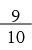
接下来的90项都大于1/100，因此：
 +
+ +
+ + … +
+ … +
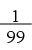
> 90×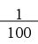
=同理，再接下来的900项都大于1/1 000，因此：
+
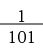
+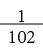
+ … +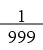
>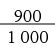
=之后还有：
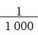
+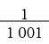
+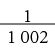
+ … +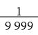
>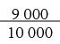
=以此类推，所有数字的和至少为：
+ + + + …
而且，这个和可以无限增加。证明完毕。 
跟大家分享一个有趣的现象：
1 + + + … ≈ γ + ln n
≈ γ + ln n
其中γ（即欧拉–马歇罗尼常数，读作“gama”）为0.577 215 564 9…，lnn 是 n 的自然对数（参见本书第10章）。（至于γ是不是有理数，目前还不知道。）随着n不断增大，上式左右两边的值的近似程度越来越高。下面是和的确切值与近似值的对比表。
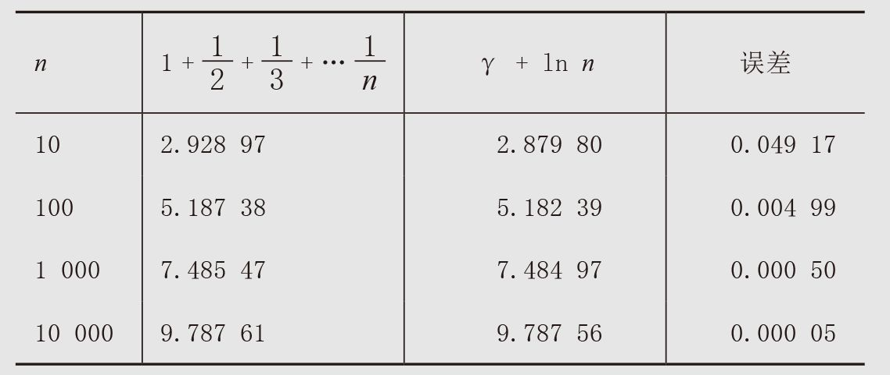
下面这个现象同样有趣。如果我们仅考虑分母为质数的项，那么对于较大的质数p，有：
+ + + + +
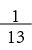
+ …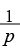
≈ M + ln ln p其中M = 0.261 497 2…，被称为“梅尔滕斯常数”。随着p不断增大，等式两边值的近似程度也会越来越高。
根据上式，我们可以得出：
+ + + + + + … = ∞
但是，这个级数趋于无穷大的速度非常慢，这是因为p的对数的对数值比较小，尽管p本身非常大。比如，以小于古戈尔（googol，即10100）的质数为分母的所有数字的和小于6。
接下来，我们对调和级数稍加改动，看看会有什么现象发生。我们从调和级数中删掉一些项，只要这些项的个数是一个有限数，该级数就仍然是发散级数。例如，我们删掉前100万项（即1 + + … +
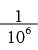
，这些项的和略大于14），那么剩余各项之和仍然无穷大。增大调和级数的各个项，它们的和也是发散的。例如，对于n > 1，有
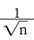
>，因此：
1 +
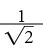
+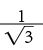
+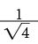
+ … = ∞但是，即使让各项变小，和也不一定会收敛。例如，让调和级数的所有项都除以100，它仍然是一个发散级数，因为：
+
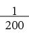
+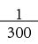
+ … =(1 + 1/2 + 1/3 + 1/4 + … ) = ∞不过，把各项变小，也有可能得到一个收敛级数。例如，让所有项进行平方运算，它们的和就会收敛。根据欧拉的证明：
1 +
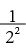
+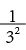
+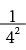
+ … =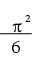
事实上，我们利用积分就可以证明对于任意的p > 1，1 +
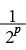
+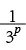
+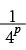
+ …都会收敛于某个小于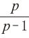
的数。例如，如果 p = 1.01，那么下式的各项都会略微小于调和级数的各项。但是，即便如此，它也是一个收敛级数。1 +
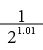
+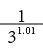
+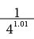
+ … ＜101假设我们从调和级数中删掉所有包含9的项，会有什么结果呢？可以证明，在这种情况下，这个级数的和不是无穷大（它肯定收敛于某个数字）。在证明时，我们根据分母的长度把不含有9的项分别相加。例如，我们先计算分母只有一位数的8个分数（ ,,,…,）之和。分母是两位数且不包含9的项一共有8×9 = 72个，这是因为第一位数有8种选择（不能是0或9），第二位数有9种选择。同理，分母是三位数且不包含9的项有8×9×9个。一般地，分母是n位数且不包含9的项有8×9n–1个。注意，分母是一位数的最大分数是1，分母是两位数的最大分数是 ，分母是三位数的最大分数是。因此，我们可以将这个无穷级数按照以下方式分成几组：
,,,…,）之和。分母是两位数且不包含9的项一共有8×9 = 72个，这是因为第一位数有8种选择（不能是0或9），第二位数有9种选择。同理，分母是三位数且不包含9的项有8×9×9个。一般地，分母是n位数且不包含9的项有8×9n–1个。注意，分母是一位数的最大分数是1，分母是两位数的最大分数是 ，分母是三位数的最大分数是。因此，我们可以将这个无穷级数按照以下方式分成几组：
1 + + + ++++ ＜ 8
+ + + … +
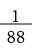
＜ ( 8×9) × = 8 ()
+ + + … +
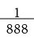
＜ ( 8×92) × = 8 ()2以此类推，根据等比数列公式，所有数字的和最多为：
8[ 1+ + ()2 + ()3 + …] =
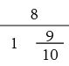
=80也就是说，各项中不包含9的无穷级数收敛于某个小于80的数字。 □
在理解这个无穷级数的收敛性时，我们可以考虑一个事实：几乎所有大数都包含9。的确，如果大家随意写下一个数字，它的每个数位上的数字都可以从0到9中随机选择，那么这个数字的前n位数中不包含9的概率是(9/10)n。随着n不断增大，这个概率将趋近0。
如果我们把π和e的值视为随机排列的数字串，那么你最喜欢的整数几乎肯定会出现在其中。例如，我最喜欢的四位数2 520就出现在π的第1845~1848位上。斐波那契数列的前6个数字（1，1，2，3，5，8）与从π的第820390位开始的6个数字一致。这6个数字出现在π的前100万位中并不令人吃惊，一方面，因为在随机生成的数字中，有6个连续数位上的数字与你给出的六位数相同的概率是百万分之一。因此，在π的前100万位数中找到与斐波那契数列的前6项相同的数字的可能性本来就存在。另一方面，999 999在π中出现得非常早（开始于第763位），真的十分令人吃惊。物理学家理查德·费曼说过，在背诵圆周率的过程中，如果你只背到第767位，人们说不定会以为π是有理数呢，因为他们最后听到的是“999999…”。
借助网站或者某些应用程序，就可以在π和e中找出我们喜欢的数字串。我就用过某个类似程序，结果发现在π的前3 000位数中，最后5位数是31961。这个数字对于我来说十分特别，因为1961年3月19日是我的出生日期！